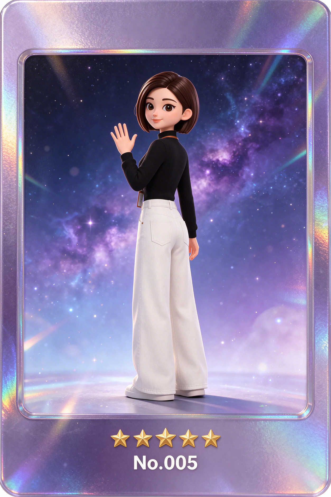
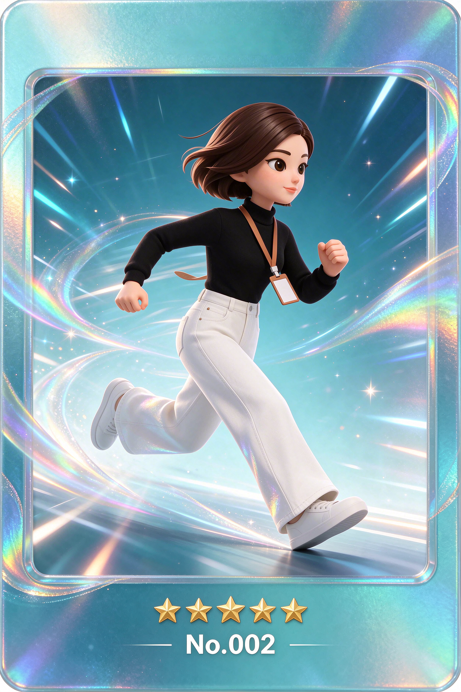
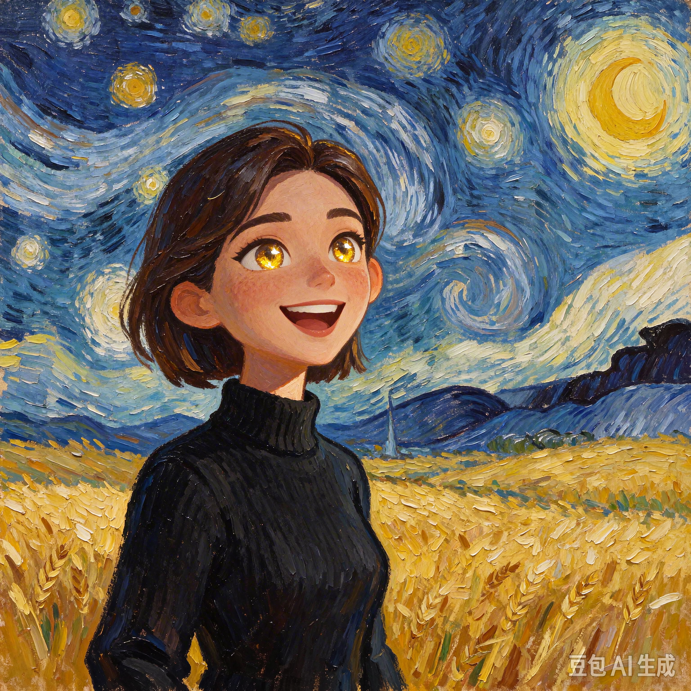

设计方向预览
A 收藏卡展柜
B 拍立得相馆
C 短流程工作台
状态照
把自己，收藏起来。
你的照片，你的专属角色
你的另一种样子
今天，想成为
哪一个自己？

银河收藏卡

风速上班卡

星夜油画
开始制作
一张照片，
一个新版本的你。
上传自己的照片，挑一个喜欢的风格。
上传你的照片
清晰正脸或半身照 · JPG / PNG / WebP
选择风格
可以多选
流光卡片
银河卡片
星夜油画
人物与穿搭偏好
可选
想保留的气质
生成我的状态照
原图不在服务端保存
×
独立结果页 · 布局预览
你的流光卡片
这是风格参考，不是根据上传照片生成的作品。
返回制作